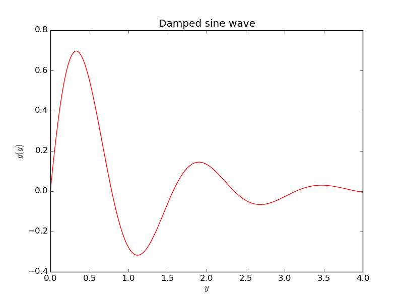
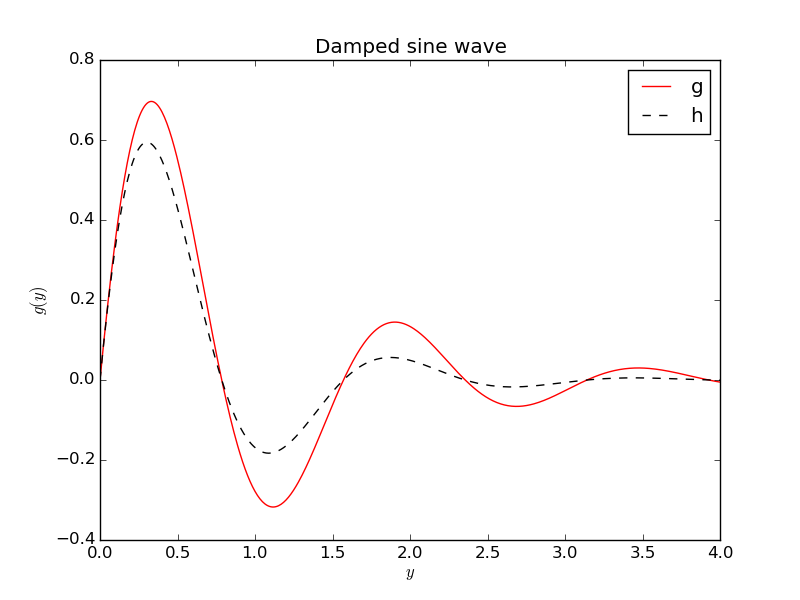

a) Make a simplest possible Python program that calculates and prints the value of the formula $$ y = 6x^2 + 3x + 2,\] for $x=2$. $$
The complete program reads
x = 2
y = 6*x**2 + 3*x + 2
print y
b) Make a Python function that takes \( x \) as argument and returns \( y \). Call the function for \( x=2 \) and print the answer.
Code:
def f(x):
return 6*x**2 + 3*x + 2
y = f(2)
print y
Let \( y=x^2 \). Make a program that writes the text
y(2.550)=6.502
if \( x=2.55 \). The values of \( x \) and \( y \) should be written with three
decimals. Run the program for \( x=\pi \) too (the value if \( \pi \) is available
as the variable pi in the math module).
Here is the code:
x = 2.55
y = x**2
print 'y(%.3f)=%.3f' % (x, y)
Changing \( x=2.55 \) to \( x=\pi \),
from math import pi
x = pi
y = x**2
print 'y(%.3f)=%.3f' % (x, y)
gives the output y(3.142)=9.870.
Define a sequence of numbers, $$ x_n = n^2 + 1,$$ for integers \( n=0,1,2,\ldots,N \). Write a program that prints out \( x_n \) for \( n=0,1,\ldots,20 \) using a while loop.
Complete program:
n = 0
while n <= 20:
x_n = n**2 + 1
print 'x%d=%d' % (n, x_n)
n = n + 1
Store all the \( x_n \) values computed in Exercise 3: Program a while loop in a list (using a while loop). Print the entire list (as one object).
Code:
n = 0
x = [] # the x_n values
while n <= 20:
x.append(n**2 + 1)
n = n + 1
print x
Do Exercise 4: Create a list with a while loop, but use a for loop.
Code:
x = []
for n in range(21):
x.append(n**2 + 1)
print x
One can also make the code shorter using a list comprehension:
x = [n**2 + 1 for n in range(21)]
print x
Write a function x(n) for computing an element in the
sequence \( x_n=n^2+1 \). Call the function for \( n=4 \) and write
out the result.
Code:
def x(n):
return n^2 + 1
print x(4)
Write a Python function that evaluates the mathematical functions \( f(x)=\cos(2x) \), \( f'(x)=-2\sin(2x) \), and \( f''(x)=-4\cos(2x) \). Return these three values. Write out the results of these values for \( x=\pi \).
Code:
from math import sin, cos, pi
def deriv2(x):
return cos(2*x), -2*sin(2*x), -4*cos(2*x)
f, df, d2f = deriv2(x=pi)
print f, df, d2f
Running the program gives
Terminal> python deriv2.py
1.0 4.89858719659e-16 -4.0
as expected.
Make a program that plots the function \( g(y)=e^{-y}\sin (4y) \) for \( y\in [0,4] \) using a red solid line. Use 500 intervals for evaluating points in \( [0,4] \). Store all coordinates and values in arrays. Set labels on the axis and use a title "Damped sine wave".
Appropriate code is
import numpy as np
import matplotlib.pyplot as plt
from numpy import exp, sin # avoid np. prefix in g(y) formula
def g(y):
return exp(-y)*sin(4*y)
y = np.linspace(0, 4, 501)
values = g(y)
plt.figure()
plt.plot(y, values, 'r-')
plt.xlabel('$y$'); plt.ylabel('$g(y)$')
plt.title('Damped sine wave')
plt.savefig('tmp.png'); plt.savefig('tmp.pdf')
plt.show()

As Exercise 9: Plot two functions, but add a black dashed
curve for the function
\( h(y)=e^{-\frac{3}{2}y}\sin (4y) \). Include a legend for each
curve (with names g and h).
Here is the program:
import numpy as np
import matplotlib.pyplot as plt
from numpy import exp, sin # avoid np. prefix in g(y) and h(y)
def g(y):
return exp(-y)*sin(4*y)
def h(y):
return exp(-(3./2)*y)*sin(4*y)
y = np.linspace(0, 4, 501)
plt.figure()
plt.plot(y, g(y), 'r-', y, h(y), 'k--')
plt.xlabel('$y$'); plt.ylabel('$g(y)$')
plt.title('Damped sine wave')
plt.legend(['g', 'h'])
plt.savefig('tmp.png'); plt.savefig('tmp.pdf')
plt.show()

IPython an enhanced interactive shell
for doing computing with Python. IPython has some user-friendly functionality
for quick testing of the efficiency of different Python constructions.
Start IPython by writing ipython in a terminal window.
The interactive session below demonstrates how we can use the
timer feature %timeit to measure the CPU time required by
computing \( \sin (x) \), where \( x \) is an array of 1M elements, using
scalar computing with a loop (function sin_func) and vectorized
computing using the sin function from numpy.
<<<<<<< HEAD
In [1]: import numpy as np
=======
In [1]: import numpy as np
>>>>>>> ded9ed9541da0be2c283fb37544f350727a325ec
In [2]: n = 1000000
In [3]: x = np.linspace(0, 1, n+1)
In [4]: def sin_func(x):
...: r = np.zeros_like(x) # result
...: for i in range(len(x)):
...: r[i] = np.sin(x[i])
...: return r
...:
In [5]: %timeit y = sin_func(x)
1 loops, best of 3: 2.68 s per loop
In [6]: %timeit y = np.sin(x)
10 loops, best of 3: 40.1 ms per loop
Here, %timeit ran our function once, but the vectorized function
10 times. The most relevant CPU times measured are listed, and we
realize that
the vectorized code is \( 2.68/(40.1/1000)\approx 67 \) times faster
than the loop-based scalar code.
Use the recipe above to investigate the speed up of the
vectorized computation of the \( s(t) \) function in
the section Functions.